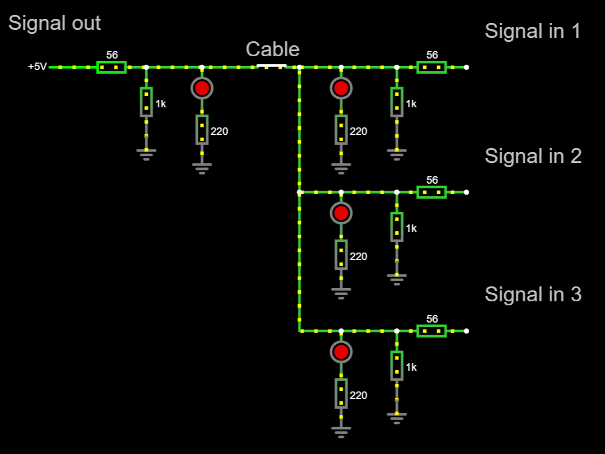
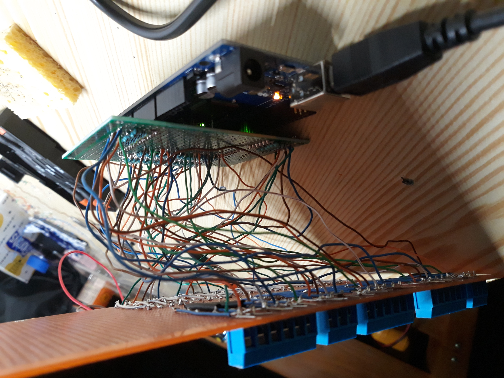
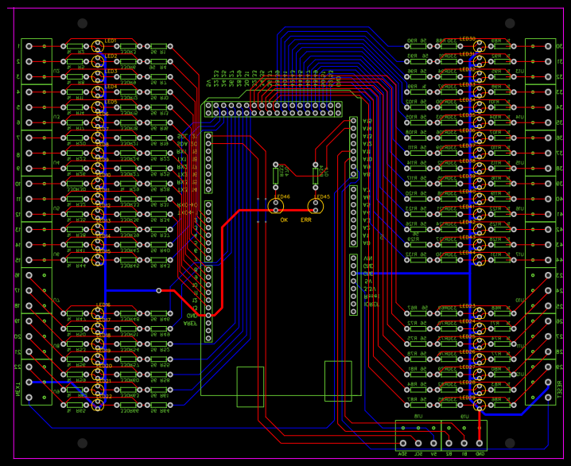
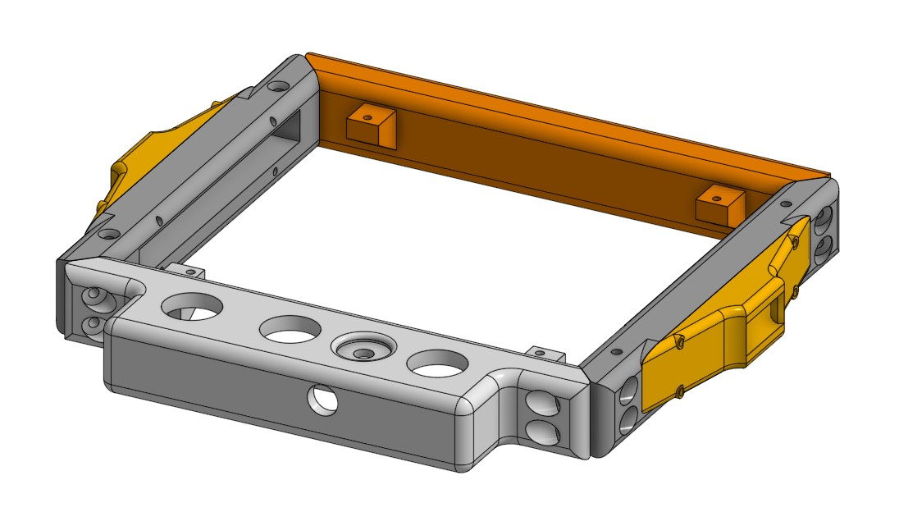

A factory from Cluj needed a cable tester. Seeing this as an
opportunity for a new project, a teacher of mine searched for a student
to work on such a device.
As it turns out, that student was I. It was a great opportunity to learn, so I did not turn it down.
The end goal of the project is a Cable tester for multiple wire cables. It does:
Check for typical and less typical wire errors:
Mismatch type errors
Open circuit type errors
Multiple outputs type errors
Short circuit type errors
Provide an easy-to-use interface for operators
The final result of this project are 3 functional devices, along with documentation, source code, technical drawings and
assembly instructions, given to the cable factory that required them.
The problems encountered in the area of electronics are the high number of wires and the
high number of components used. Taking into account the the experience and available time
I had at the moment, I chose to stick to something simple. Instead of using multiplexer circuits,
I used an Arduino mega. I worked before with such devices, and the probability of success was greater this way
The interface consists of a LED for each wire, a master OK LED, a master ERROR LED and 3 buttons (menu, next, run/select).
The wire LED-s light up whether signal is sent through the wire or received.

The prototype proved to be very difficult to build, again, due to the high number of components. In order
to fit everything, I had to use 2 boards: one connected to the Arduino like a shield, and the second one (much
bigger) connected with 44 hand soldered wires.

After testing the prototype and making sure it works, I began working on the finished product. The pcb
will merge the 2 boards used in the prototype so that the whole device is actually an Arduino mega shield.

Mechanics
The most important part in designing the enclosure and mechanical interface was to keep it simple. The operators
don't need to focus on settings and menus and so on. The only need to know what button starts the testing.
Another factor was to keep the material use low, so that the 3d printing process would not take forever. I chose
to buid a structure that surrounds the PCB, instead of a huge plastic box.

Programming
The programming was done in Arduino language. It consists of three major parts:
The cable template matrix - holds the structure of the cable
The error matrix - holds information about found errors
The error detection algorithm - uses the cable template matrix to search and find errors, and then update
the error matrix.
Later I realized that a new function would be of an important use. A golden sample scan. This option would scan the
pins of the device and update the cable template matrix according to the currently connected cable. This would shorten
the time it takes to change the cable that is being tested. I thought about how to add this to the user interface,
and I figured that the simplest way was to remove the "manual mode" and replace it with a "golden sample scan".
Here is a state diagram of the device, before changing the "manual mode" with a "golden sample scan":